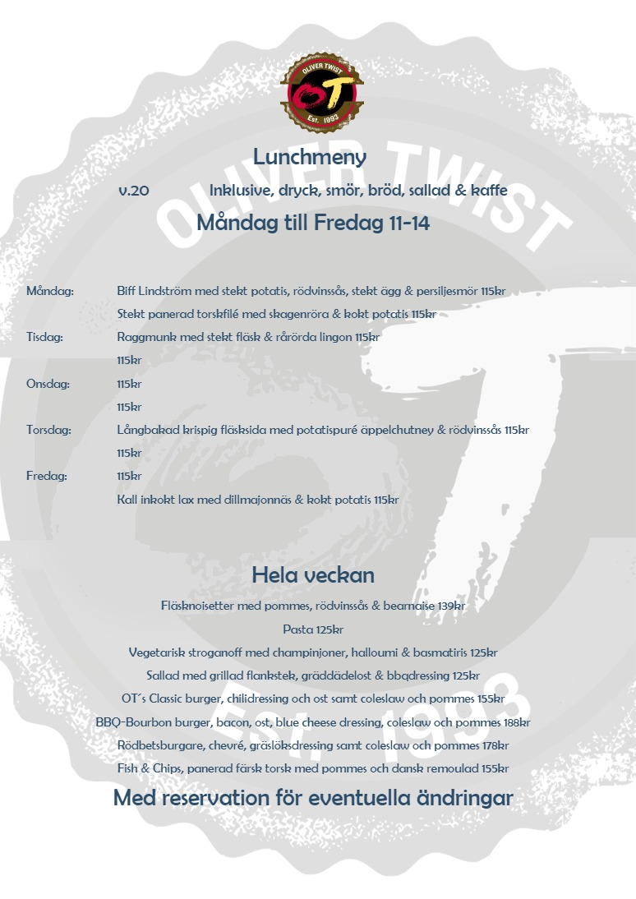

Lunchmeny
v.20
Inklusive, dryck, smör, bröd, sallad & kaffe
Måndag till Fredag 11
-
14
Måndag:
Biff Lindström med stekt potatis, rödvinssås, stekt ägg & persiljesmör 115kr
Stekt panerad torskfilé med skagenröra & kokt potatis 115kr
Tisdag:
Raggmunk med stekt fläsk & rårörda lingon 115kr
115kr
Onsdag:
115kr
115kr
Torsdag:
Långbakad krispig fläsksida med potatispuré äppelchutney & rödvinssås 115kr
115kr
Fredag:
115kr
Kall inkokt lax med dillmajonnäs & kokt potatis 115kr
Hela veckan
Fläsknoisetter med pommes, rödvinssås & bearnaise 139kr
Pasta 125kr
Vegetarisk stroganoff med champinjoner, halloumi & basmatiris 125kr
Sallad med grillad flankstek, gräddädelost & bbqdressing 125kr
OT ́s Classic burger, chilidressing och ost samt coleslaw och pommes 155kr
BBQ
-
Bourbon burger, bacon, ost, blue cheese dressing, coleslaw och pommes 188kr
Rödbetsburgare, chevré, gräslöksdressing samt coleslaw och pommes 178kr
Fish & Chips, panerad färsk torsk med pommes och dansk remoulad 155kr
Med reservation för eventuella ändringar
